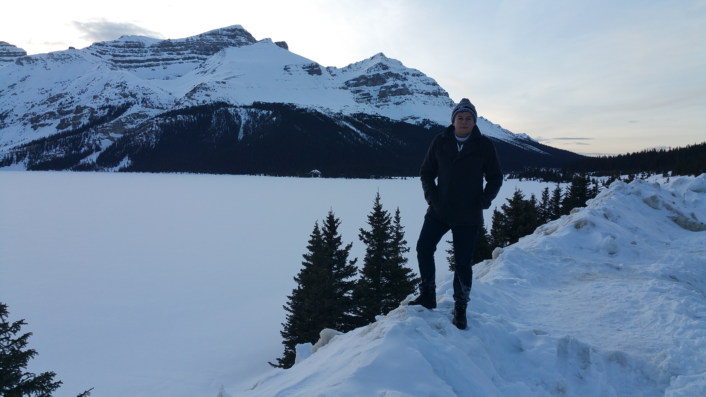

Hello there visitor, my name is Angel, and I'd like to welcome you to my website! The purpose of this website is to expose you to the many wonders this beautiful planet has to offer.
For a quarter of a century, I've had the privelage to travel around the world, providing with my eyes with amazing sights that I hope to share with you. Not only that, I will also provide you with destinations that I would also like to travel to.
Of course, these destinations or purely based on my interest, and there may be something out there that appeals to you, and not to me. Keep that thought in mind, and be warned, I'm a sucker for cold environments.
My goal is to show you what my eyes have seen, and what they will see.